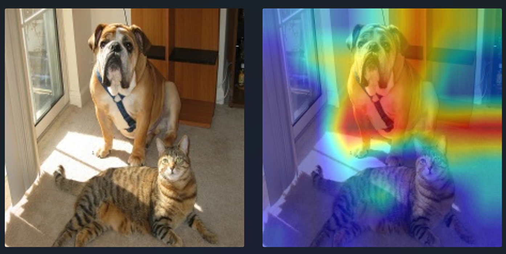
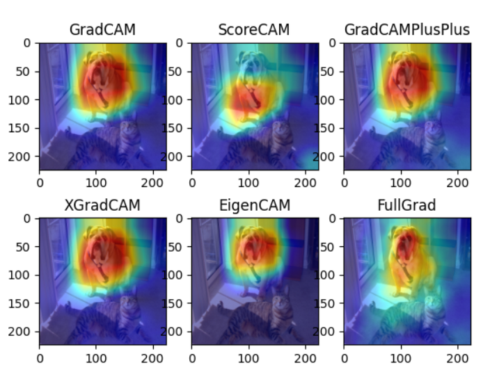
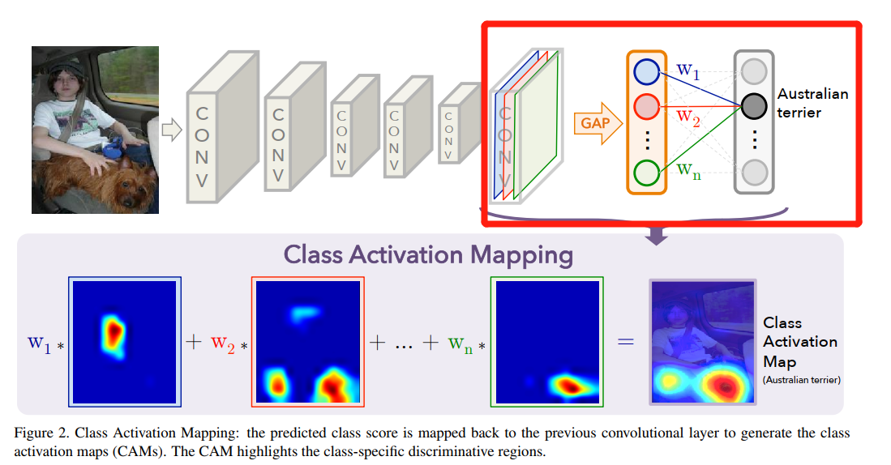
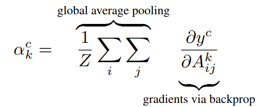
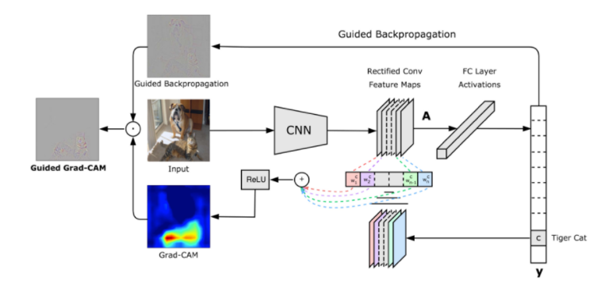
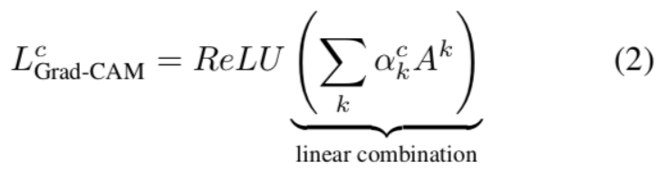
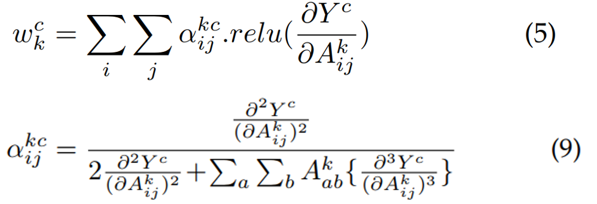
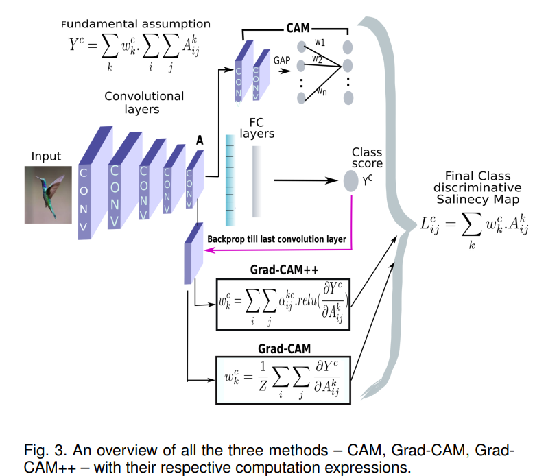

6.4 CAM可视化与hook函数使用
前文说到，在本章第二节介绍CNN的可视化时我们知道，深度学习模型仍是一个黑箱，大家想尽办法对其进行可视化，本节就介绍一个实用的分析方法CAM(Class activation mapping，类激活图)，如下图所示：

以上图为例，CAM方法是探究模型将图片分为“Dog”的依据是什么，即图片中哪些区域支撑了模型将图片判别为"Dog"。
其背后的原理是将网络中间的特征图进行加权并可视化，而权重的得来就有多种方法，不同的方法就有了不同的CAM算法，如CAM、Grad CAM和Grad CAM++。
CAM：《2016-CAM-Learning Deep Features for Discriminative Localization》
Grad-CAM：《2017-Grad-CAM Visual Explanations from Deep Networks via Gradient-based Localization》
Grad-CAM++：《2018-Grad-CAM++ Generalized Gradient-based Visual Explanations for Deep Convolutional Networks》
本文将介绍其演变过程，并用手写代码实现Grad CAM，同时借助强大的github仓库，实现多种热力图对比，如下图所示：

CAM
论文名称：《Learning Deep Features for Discriminative Localization》
原理解释：CAM方法需要将CNN模型修改后重新训练，修改的目的就是为了获得加权权重，具体方式如下图所示：

将最后一层特征图之后的层移除，并接入一个全连接层用于分类，全连接层的输入是特征图的全局池化后的特征向量。
最终热力图通过分类类别神经元所对应的权重w，乘以最后一层特征图，再求和即可。
背后逻辑有两个：
1、最后一层特征图是原图经过一系列卷积后保留下来的特征，其与原图的空间关系一一对应，空间关系指左上角对应左上角，右下角对应原图右下角，等等。
2、特征图对于分类类别（如上图的AustralianTerrier）的贡献程度与全连接层权重密切相关
因此，只需要利用全连接层的权重乘以对应通道，即可得到热力图。
Grad CAM
论文名称：《Grad-CAM Visual Explanations from Deep Networks via Gradient-based Localization》
CAM的思路非常巧妙，但缺点很明显，它需要对模型进行修改，并且重新训练，不适用于大多数场景。
为此，研究者提出额Grad CAM，可以对模型直接进行观察，无需改动模型。
Grad CAM的思路也非常巧妙，在CAM思路中有两个要素：
1、特征图
2、特征图对应指定类别的权重
特征图很容易获得，但特征图的重要性（加权权重）应该如何寻找？
Grad CAM给出了不一样的答案，Grad CAM利用梯度求导获得特征图的重要性权重。
原理分析：
假设最后一层feature maps有10个，那么如何寻找10个权值用来指示这些feature maps对某一类别的重要性呢？
CAM是通过对feature maps进行GAP，然后采用该类别与这个10个GAP后的神经元的连接权值作为权值；
而Grad-CAM采用的则是梯度，是该类别对于这10个feature maps的求取梯度。
注意：最终求取的梯度是一个110的向量，即每个feature map对应一个标量，而对feature maps求取梯度是一个矩阵，作者是通过对*矩阵求均值得到的标量。
对于类别c，特征图的权值 a_k^c 计算公式如下:

c表示第c类，k表示第k个特征图，Z表示特征图像素点总数，i表示行，j表示列，A表示特征图。
公式可以分两部分看，最右边 gradients via backprop，即对类别c求得特征图的梯度，是一个二维的矩阵；
再通过左边的global average pooling，对二维的梯度矩阵求平均值，得到第k个特征图对于第c类的权值。
示意图如下：

最终的热力图通过以下公式进行求取：
与CAM不同的是，Grad-CAM在加权求和后还加上了ReLU函数，计算公式如下：

之所以加上ReLU，是因为在这里只关注正的梯度值，而不关注负的。
最后将Discriminative Localization Map直接resize至原图大小即可，如最后一层feature maps是14*14的，原图是224*224，则将14*14的图缩放到224*224即可。
Grad-CAM++
论文名称：《Grad-CAM++ Generalized Gradient-based Visual Explanations for Deep Convolutional Networks》
事物总是在不断的发展，Grad CAM还存在以下缺点：
当图片出现多个同类物体时，无法定位；（1-3列）
单物体图片中，定位错误。（4-6列）

并且， Grad-CAM中一个特征图对应的权重是对特征图的梯度求平均，即认为特征图的梯度（2维数据）上的每个元素同等重要。
而Grad-CAM++则认为特征图的梯度上的每个元素重要程度应当不一样，因此对Grad CAM进行了改进。
Grad-CAM++ 热力图的权重计算通过以下公式：

CAM系列对比
CAM、Grad-CAM和Grad-CAM++的区别如下图所示：

关于CAM还有很多迭代改进，可参考这个repo
repo中对数十个CAM进行了实现，建议使用。
本节将用代码手动的实现Grad CAM，并通过算法的实现来学习nn.module中的hook函数使用。
nn.module中的hook函数
在CAM系列算法中知道，需要利用中间层的特征图，可nn.module并不会返回、保留中间层的特征图。这时，就要用到nn.module中的hook函数，把中间层特征图给拿出来。
什么是hook函数?
pytorch中的hook是一个非常有意思的概念，hook意为钩、挂钩、鱼钩。 引用知乎用户“马索萌”对hook的解释：“(hook)相当于插件。可以实现一些额外的功能，而又不用修改主体代码。把这些额外功能实现了挂在主代码上，所以叫钩子，很形象。” 简单讲，就是不修改主体，而实现额外功能。对应到在pytorch中，主体就是forward和backward，而额外的功能就是对模型的变量进行操作
pytorch提供的hook
1. torch.Tensor.register_hook
功能：注册一个反向传播hook函数，这个函数是Tensor类里的，当计算tensor的梯度时自动执行。
形式： hook(grad) -> Tensor or None ，其中grad就是这个tensor的梯度。
返回值：a handle that can be used to remove the added hook by calling handle.remove()
案例请看配套代码
2. torch.nn.Module.register_forward_hook
功能：Module前向传播中的hook,module在前向传播后，自动调用hook函数。
形式：hook(module, input, output) -> None。注意不能修改input和output 返回值
其中，module是当前网络层，input是网络层的输入数据, output是网络层的输出数据
应用场景：如用于提取特征图
案例请看配套代码
3. torch.nn.Module.register_forward_pre_hook
功能：执行forward()之前调用hook函数。
形式：hook(module, input) -> None or modified input
应用场景举例：暂时没碰到过，希望读者朋友补充register_forward_pre_hook相关应用场景。
registerforwardprehook与forwardhook一样，是在module.__call中注册的，与forward_hook不同的是，其在module执行forward之前就运行了，具体可看module.__call中的代码，第一行就是执行forward_pre_hook的相关操作。
4. torch.nn.Module.register_full_backward_hook
功能：Module反向传播中的hook,每次计算module的梯度后，自动调用hook函数。
形式：hook(module, grad_input, grad_output) -> tuple(Tensor) or None
注意事项：当module有多个输入或输出时，grad_input和grad_output是一个tuple。
返回值：a handle that can be used to remove the added hook by calling handle.remove()
应用场景举例：例如提取特征图的梯度
Grad CAM 手动实现
下面就利用 register_forward_hook 和 register_full_backward_hook 来实现Grad CAM
详情请看配套代码
整体思路如下：
- 对模型最后一个卷积层进行hook函数注册，两个hook分别记录特征图于梯度
def backward_hook(module, grad_in, grad_out):
grad_block.append(grad_out[0].detach())
def farward_hook(module, input, output):
fmap_block.append(output)
------------------------------------------------------------
# 注册hook
resnet_50.layer4[-1].register_forward_hook(farward_hook)
resnet_50.layer4[-1].register_full_backward_hook(backward_hook)
- 获取类别loss，类别loss为分类类别最大的那个神经元的值，具体由comp_class_vec函数实现
if not index:
index = np.argmax(ouput_vec.cpu().data.numpy())
else:
index = np.array(index)
index = index[np.newaxis, np.newaxis]
index = torch.from_numpy(index)
one_hot = torch.zeros(1, 1000).scatter_(1, index, 1)
one_hot.requires_grad = True
class_vec = torch.sum(one_hot * ouput_vec) # one_hot = 11.8605
执行backward，得到梯度
通过gen_cam()函数得到CAM图
将CAM与原图进行融合可视化，如下图所示
CAM 系列算法统一实现
CAM自2016年提出以来，已经有多种改进，并可运用于图像分割和目标检测，详细的CAM算法参见仓库。
pytorch-grad-cam提供了丰富的算法及简单的接口应用，下面就以resnet50为例，绘制6种CAM算法的热力图，效果如下图所示。
代码就不剖析了，grad-cam的接口已经非常清晰。请运行代码，查看结果如下图所示：
小结
CAM系列算法对理解深度卷积神经网络非常有帮助，建议仔细学习本节内容并进行拓展。
通过CAM分析：
可诊断模型是否学到真正特征
可通过热力图信息做对应的数据增强（如对非激活区域进行随机擦除和Cutout处理），类似YOLOv4中的CutMix数据增强方法。
- 还可以将热力图作为语义分割的弱监督标签进行训练分割模型，可参考《Tell Me Where to Look: Guided Attention Inference Network》